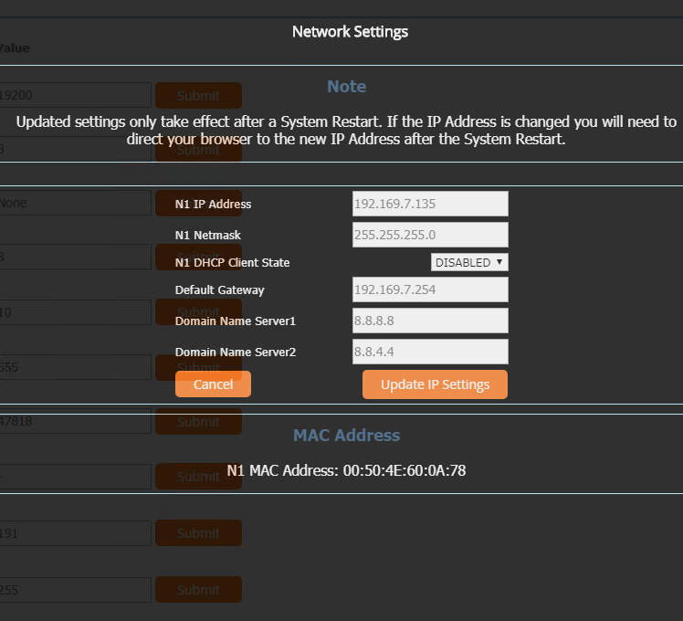
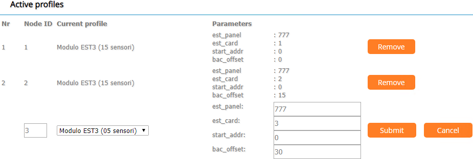

Configuring the Connection to the Devices Through the Gateway
- Open the browser on your computer.
- In the address bar of the browser, enter the gateway IP address.
- The first time you connect to this gateway, configure the Network Settings parameters, click Update IP Settings and then System Restart.

- The Gateway Profile Configuration page displays.
- In the Configuration Parameters section, enter the gateway ProtoNode settings. See the gateway product documentation for details on those parameters.
- In the Active profiles section, create the required device nodes as follows:
a. Click Add.
b. Specify the required parameters:
- Node ID (unique sequential number)
- Current profile (number of sensors you want to create)
- est_panel and est_card (see the Edwards EST3 panel and card documentation)
- start_addr (initial address of the name of the points to be created)
- bac_offset (BACnet offset. A sequential number in the range of the points to be created.)
c. Click Submit.
d. Repeat the previous substeps for all the required profiles. 
- Click System Restart to save the configuration.